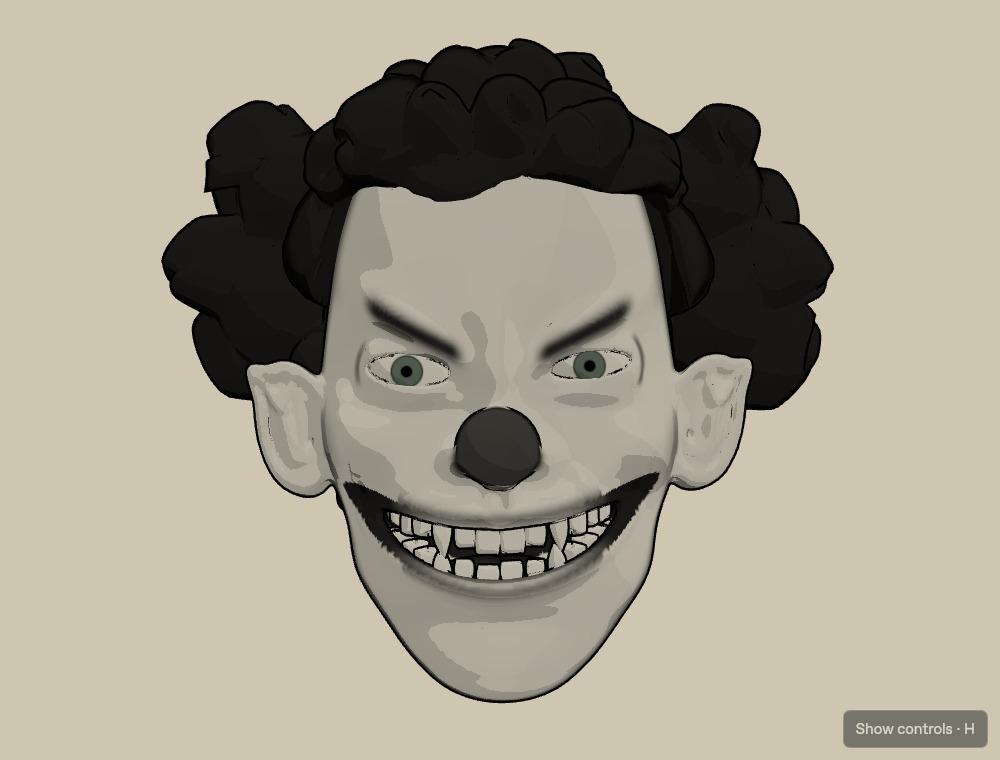
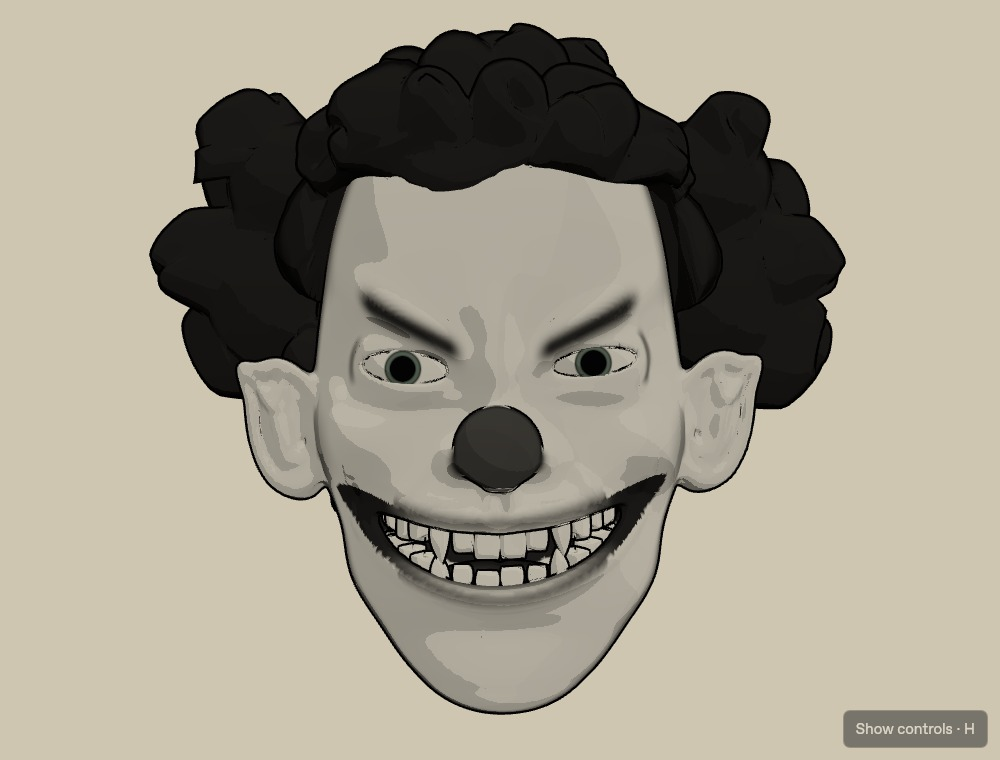
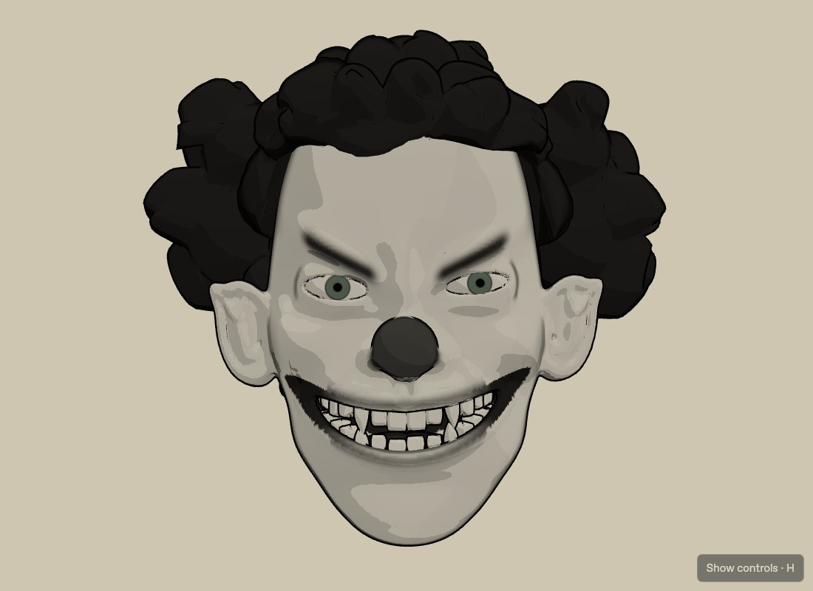
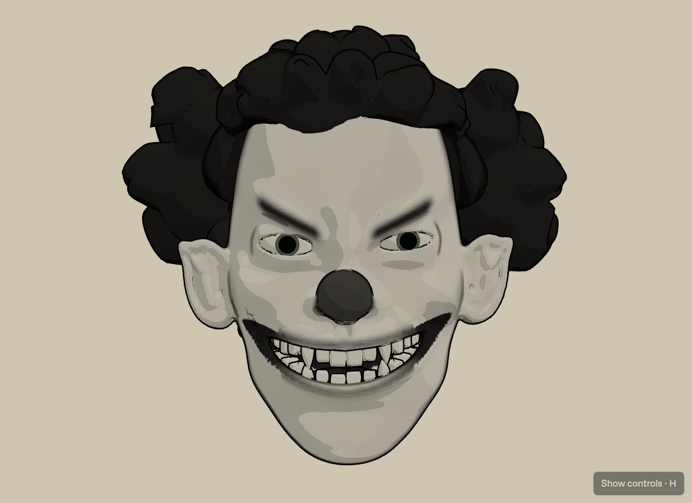
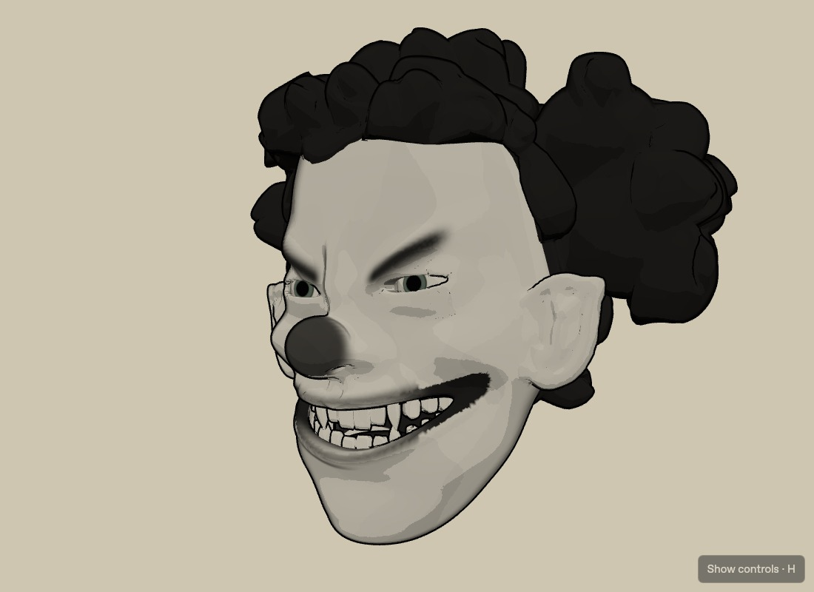
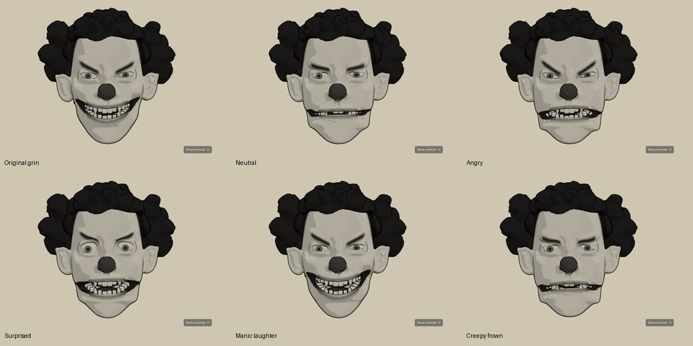
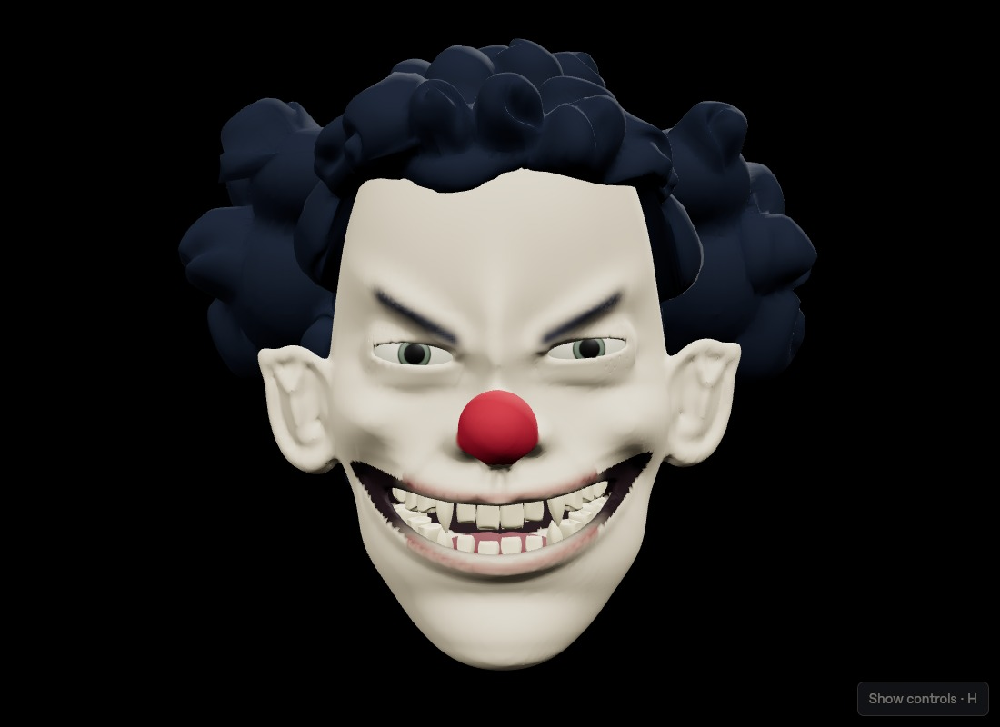

Current Live Show: expression targets change every 2 beats, with a 1-beat transition. Timing controls are removed and these values cannot be overwritten by BPM, presets or mode switches.
The complete original character group scales uniformly from 1.00 to 1.04 (Medium) on the same event that drives the eyes. Shared timing: 50 ms attack / 280 ms release. A duplicate-event guard avoids clock/kick double attacks; rest scale is absolute, with no breathing-scale addition or accumulated growth.
Previous working ink/eye show (b9adc84)


Head intensity: Off / Subtle 2% / Medium 4% / Strong 6%. Facial geometry, rig, expression targets and ink shaders are unchanged. Head pulses do not restart expression transitions.
Open Live Show · Previous BPM show (1a23303) · Protected original facial rig
The original animated facial geometry, six expressions, jaw/dental mechanics and BPM system remain unchanged. The illustrated look is an actual 3D render: toon lighting, limited cream/gray/black colors, feature contours and shared-geometry inverted-hull silhouettes. No sprites or rendered-image substitutes are used.


Irises and pupils are shaded directly on the original curved globes; old caps are hidden. Shared gaze rotates their material coordinates. Default dilation uses 50 ms attack / 260 ms release and 80% intensity. Pupils expand more than irises, with an inner-iris size limit. Retriggers begin at the current dilation.



Choose Original 3D / Ink 2D at any time. Ink controls: outline width, contrast, 2–5 shading bands, ink amount and background. Eye controls: iris/pupil size, pulse amount, attack/release, detected-kick source with automatic BPM fallback, BPM-only source and Test pulse. Reset disables eye pulses for static inspection. Musical phrase emotions and percussion accents remain independent.
56 unit tests and Chromium/WebKit live checks verify 120, 130, 135 and 140 BPM; uniform XYZ scaling; exact 1.00 rest and 1.04 Medium peak; matching head/eye event timestamps and normalized curves; all four intensity settings; expression changes during pulses; fullscreen; unchanged shared geometry.
Head pulse Chromium data · Head pulse WebKit data